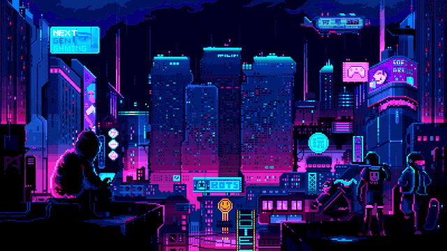

A whole city
of possibilities.
One vault. Thousands of games. Movie nights.
Your next adventure starts here.
Your next checkpoint.
Play a game to create your Continue shortcut.
Featured games
Find your next favorite.
The merged GameVault and 4texas4 collections, in one searchable library.
Make it a movie night.
Movies and TV from the supplied catalogs. External streams are not bundled video files.
Some entries are catalog-only: the archives did not include their streaming backend. Add your own authorized video URLs in config.js to enable playback and automatic resume.
Meet your cloud arcade.
CloudMoon and the cloud-game shortcuts from 4texas4. These run on third-party services.
Everything worth saving.
Guest mode · saved on this browser.
Neon 2048 syncs automatically when signed in. Other games need their own export/import feature: back up the file here, then download and import it inside the game. External-frame progress and IndexedDB saves cannot be read automatically.
Recent activity
Favorites & watchlist
Save-file slots
Three private save-file slots · up to 500 KB each. Never upload passwords or personal documents.
A little friendly competition.
Neon 2048 scores · community-submitted, not server-verified.
Connect Firebase to enable the shared leaderboard. No sample scores are shown.
| Rank | Nickname | Best score |
|---|
Public posts contain your chosen nickname and score, never your email. Sign in, verify your email, and opt in from the game to publish your best score.
Play Neon 2048 →More than an arcade.
Original tools and shortcuts from 4texas4. Third-party pages may have their own accounts, ads and restrictions.
Source & credits
Based on GameVault (googledrive123) and 4texas4. Original notices and source archives are supplied with this release.
License & source information ↗Your day, at a glance.
The original GameVault bell schedules, weekday rotation and calendar. America/Chicago.
Calendar exceptions come from the uploaded source and repeat annually. Review dates in js/schedule.js each school year. This is not a live school-calendar feed.
Your vault. Your settings.
District203-inspired controls, without changing your existing bell schedule or account data.
Motion & display
This is Neon Vault, not an actual Google Docs document. The original Docs favicon remains unchanged.
Game launch mode
Compatible mode uses a separate game origin when configured; otherwise it uses District203’s website. Restricted native mode keeps your account isolated, but some engines need browser storage or workers and may not run. Native files are added during the GitHub build.
View completed import reportQuick exit
Only works while this portal has focus, not inside games from another site. Saves may still be syncing when you leave.
Library controls
Keeps favorites, movie bookmarks, save-file slots and your current Neon 2048 checkpoint.
Uses your browser’s standard unsaved-changes prompt where supported. It cannot guarantee a prompt on mobile or force a tab to stay open.